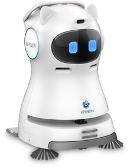
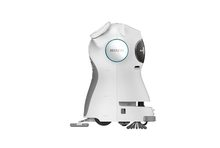
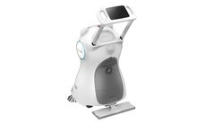
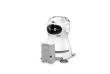

Kompakter 3-in-1 Trockenreiniger für kleinere Flächen in Gastronomie und Pflege.





Kehrt, saugt und wischt Staub gleichzeitig, starker Saugmotor.
Herausziehbarer Bildschirm, benutzerfreundliche Oberfläche.
3 Stereo-Vision-Sensoren, intelligente Hindernisvermeidung.
Konfigurierbare Betriebszeiten, autonome Rückkehr zur Ladestation.
| Abmessungen | 49,0 x 53,0 x 75,0 cm |
| Gewicht | 35 kg mit Batterie |
| Geschwindigkeit | 0,8 m/s |
| Reinigungsbreite | 61,0 cm |
| Reinigungseffizienz | 600 m²/h |
| Akkulaufzeit | bis zu 10 Stunden |
| Geräuschpegel | unter 70 dB |
Offizielle Produktinformationen des Herstellers KEENON. Technische Daten dienen als Orientierung.
Der KLEENBOT C30 eignet sich dank 3-in-1-Funktion, einfacher Bedienung und Selbstaufladung für eine Vielzahl von Einsatzbereichen.
In diesem Hotel arbeitet der C30 mit mehreren Kollegen zusammen: Der T9 Pro bedient Gäste im Restaurant, der T10 räumt ab, der C30 übernimmt die Reinigung und der Zimmerservice läuft über den W3 – mit einem Anstieg der Reinigungsfrequenz von wöchentlich auf täglich.
Mit bis zu 600 m² Reinigungsleistung pro Stunde und bis zu 2.500 m² pro Akkuladung sorgt der C30 für hygienisch einwandfreie Trainingsbedingungen – und schafft dem Team mehr Zeit für die Mitgliederbetreuung.
Während der C30 im Hintergrund für eine frische, hygienische Umgebung sorgt, übernimmt der T10 im Bistro die Essensausgabe – ein echtes Highlight für Groß und Klein.
Auch außerhalb von Gastronomie und Hotellerie überzeugt der C30: Im Bürogebäude hält er Flure und Gemeinschaftsflächen zuverlässig sauber, ohne den laufenden Betrieb zu stören.